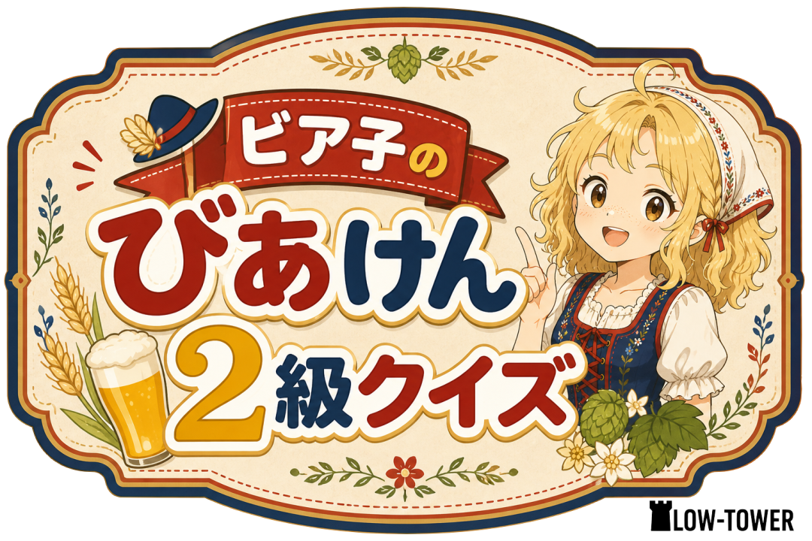
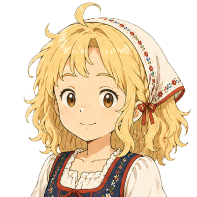

🍺 びあけん 2級
1 / 100

ワタシ、ビールの妖精ビア子です！
これからアナタをびあけんに合格させるために頑張ります！
いわばトレーナーというやつです。
アナタはウマ娘で言うウマ娘です！
目指せ有馬記念！！🏆
全100問 / 70点以上で合格
START QUIZ !

問題を読んで、答えを選んでね！
❶ 基本・原料
★★★
Q1
📖 解説
📖 解説
次の問題へ →
RESULT 🍺
0
/ 100点
もう一度チャレンジ！